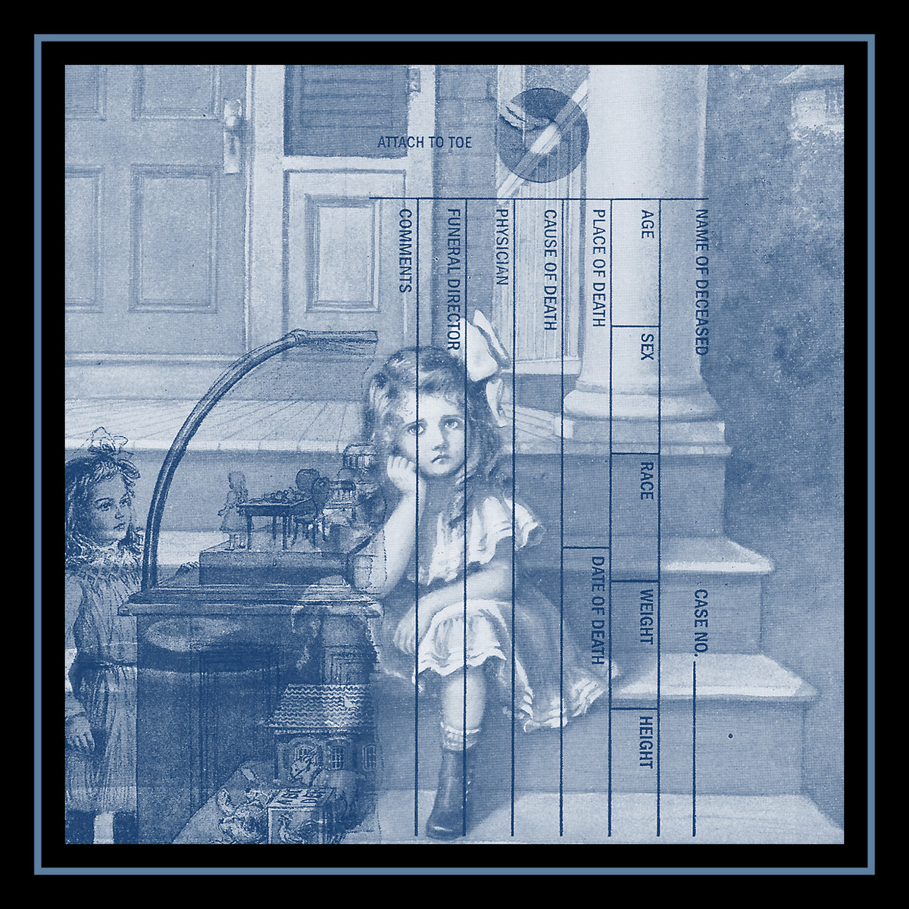

brandon dunlap - e.s.r.
catalog: ar-008
year: 2021
format: cassette
"Song contraptions... Air from an old house...
Faces in candles... Acid and water..."
A mostly acoustic psychedelic album with micro layers of contact mic rumblings, running water and record crackling. Always a downer unease lurking around. Edition of 25 cassettes with risograph covers printed by Looky Here and a small black candle.
1. sun obstruction
2. wither vine
3. vehicle
4. all about one
5. big bother cable cross
6. x-lifelike
7. all about two
8. rule master
9. this is my blood
2. wither vine
3. vehicle
4. all about one
5. big bother cable cross
6. x-lifelike
7. all about two
8. rule master
9. this is my blood
*** cassette available on bandcamp ***